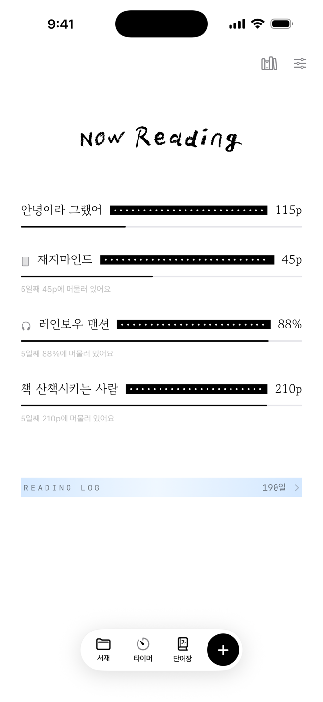
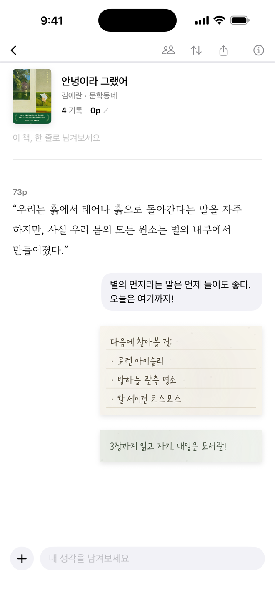
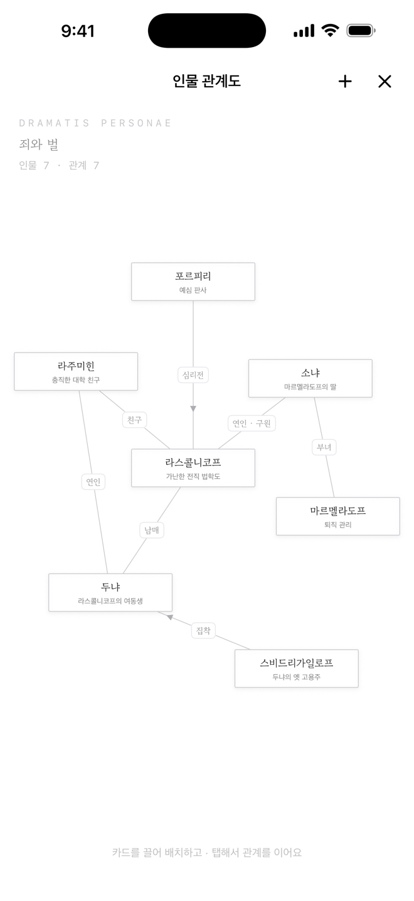
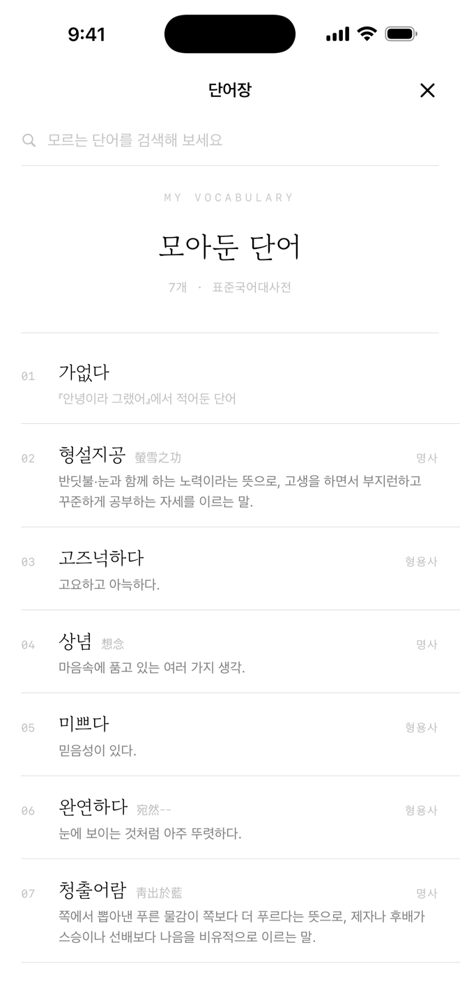
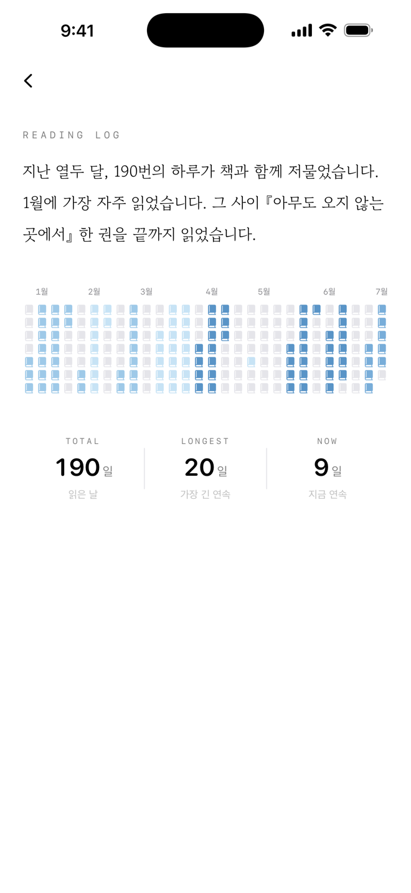
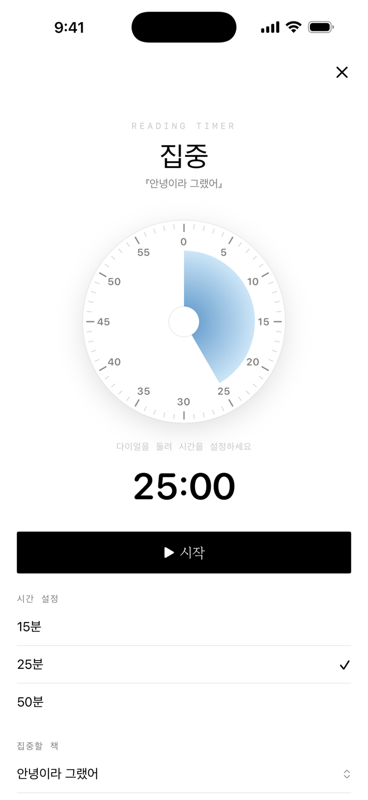

지금 읽는 책들이
나만의 서재가 돼요
하나홈 화면은 책의 차례를 닮았습니다. 읽는 중인 책들이 점선 위에 놓이고, 어제 읽은 페이지만큼 가는 선이 채워집니다.
서재 · 진행률 · 완독 책장
문장은 옮겨 적고
생각은 말풍선에
둘인용·메모·사진·포스트잇 — 채팅하듯 가볍게 남기는 독서 노트. 책 속 문장은 카메라로 스캔하면 텍스트가 됩니다. 인식은 전부 기기 안에서.
독서노트 · 문장 스캔 · 포스트잇
헷갈리는 인물들은
관계도로 한눈에
셋이름표를 캔버스에 놓고 관계를 선으로 잇습니다. 등장인물이 많은 긴 소설도, 길을 잃지 않도록.
인물 관계도
모르는 단어는
나만의 단어장으로
넷책에서 만난 낱말을 저장하면 표준국어대사전 뜻풀이와 한자 훈음이 함께 담깁니다. 홈 화면 위젯으로도.
단어장 · 한자 · 위젯
읽은 날들이
문장이 되어 남아요
다섯하루하루의 기록이 열두 달의 잔디로 자랍니다. 스트릭과 통계, 그리고 일 년의 독서를 문장으로 돌려주는 결산까지.
독서 잔디 · 스트릭 · 결산 · 별점 분포
오롯이 읽는 시간,
집중 타이머
여섯다이얼을 돌려 시작하는 뽀모도로. 잠금화면과 Dynamic Island에서 흐르는 시간을 보고, 방해되는 앱은 잠시 잠가둘 수 있어요.
뽀모도로 · Live Activity · 앱 잠금